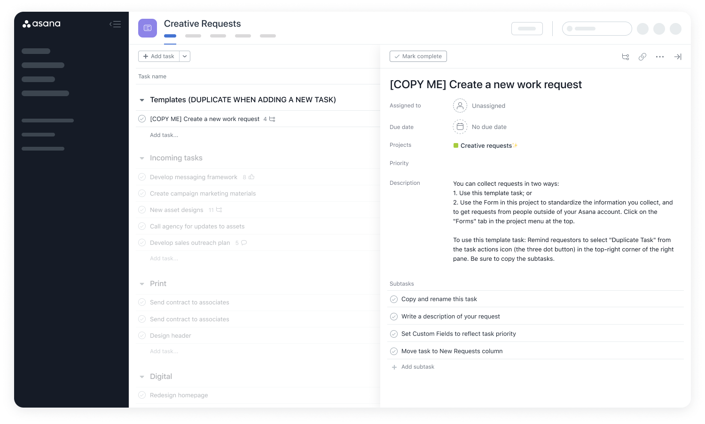
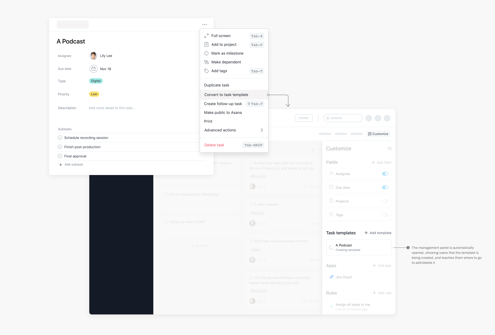
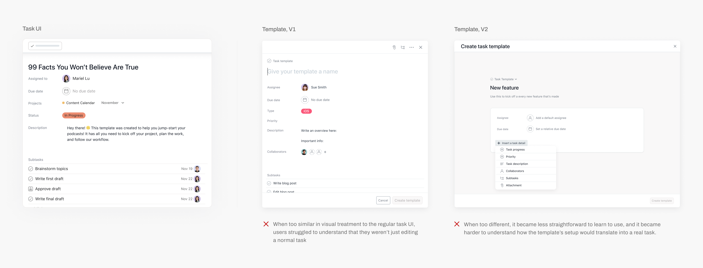
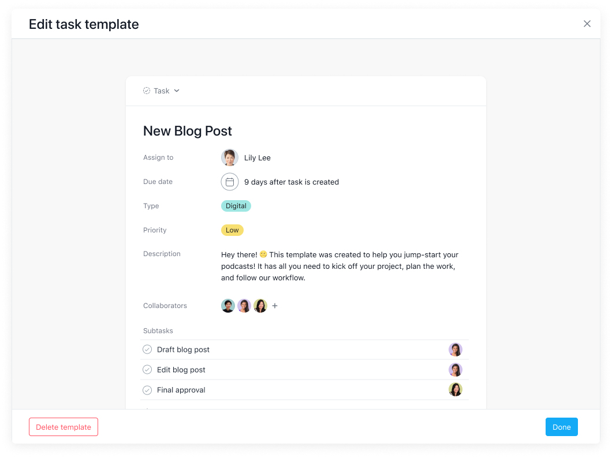
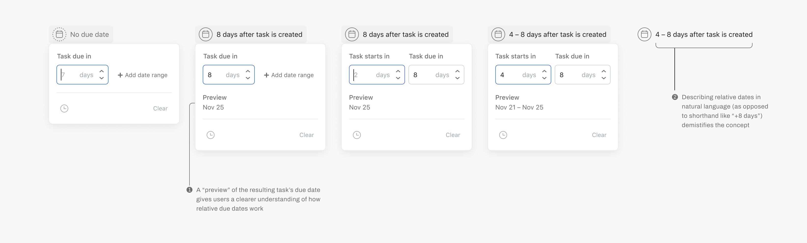
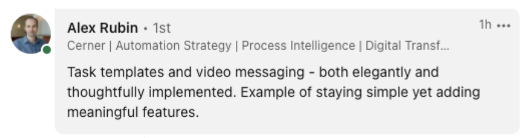

, building tools that teams depend on to manage their work.
, building tools that teams depend on to manage their work.Asana Task Templates
Oct 2020 – Jan 2021
Role
Lead and solo designer
Team
1 product manager, 1 researcher, 4 engineers
Creating new tasks in a consistent format is a key use case, but there was no standard way to do this in Asana. I led the design of this new feature to allow users to templatize their tasks. I was involved in the end-to-end process—from discovery, to problem definition, to executing on visual design, to polishing the final product with engineers, and to creating illustrated and animated assets.
User problems
Processes begin with the creation of new work.
But, there was no way in Asana to standardize the way that work was created. As a result, users struggled wtih the following:
- Wasting time and effort recreating the same task
- Teams struggling to capture new work in standardized formats, leading to inconsistent process
- Using workarounds (duplicating old tasks) made users feel like Asana was fragile and like it didn’t support their teams workflow.

An example of a workaround people use
Our vision
Templates, not just as a static starting point for tasks, but as a repeatable process.
Research
What did users want from templates?
Through extensive user research, prodding at team’s use cases and their workflows, we came to the realization that users didn’t just want to create tasks faster. To users, templates were how they represented the entire lifecycle of a piece of work.
Templates aren't just a static starting point for tasks, but also capture a repeatable process. In interviews, users seemed to crave ways for templates to be more dynamic, so it could capture how their work needed to change as it progressed.
- Relative due date scheduling
- Any task that exceeds a budget of $50 will automatically need finance approval added
- Role-based assignment, so bug report tasks can be assigned to the engineer with most bandwidth
While not all of these use cases made it into our final scope, it helped guide our decisions during implementation to ensure that future functionality would fit within these designs.
Create templates quickly and easily
We noticed that users needed to repeat a task several times before finding a setup that really worked. Only then did they feel confident enough to templatize and share with their team. As a result, we identified the ability to convert an existing task into a template as critical to minimizing friction.
We knew an important part of adoption would be allowing users to convert their existing tasks into templates.

Editing templates
We’d be reusing many of the same components from regular Tasks. But to make sure users knew they were editing a template and not a normal task took many visual explorations. Below is two of those previous explorations.

The visual treatment we landed on took the best from both worlds. It uses a layout similar enough to regular tasks that users immediately understood how to use it. But when contained in a larger modal, users were placed in a more focused editing experience, and had a salient enough visual cue that this was a distinctly different interface from normal tasks.

Setting relative due dates
Rather than setting templates such that tasks are always due on a static date (e.g. Feb 7), users expected to set variable due dates (e.g. tasks are due +5 days after creation).
One interesting UX challenge was designing the template’s date picker so anyone could easily understand and set up these relative due dates, without having to do any mental maths, and in a way that worked when translated into any language (especially in those with inverted sentence structures).

Results, reflections, post-launch learnings
Since launch, 3.8 million tasks have been created using templates, saving countless amounts of time and manual effort for people’s processes.

As we noticed earlier, many users latched onto the concept of task templates for standradizing full processes, and not just as a shortcut to duplicate information. It’s inspiring to see how they’ve enabled teams to better execute on their repeatable work. Things we've seen teams do with them include…
- writing blog posts
- following up with new sales leads
- fulfilling new orders
- requesting work from a designer
- onboarding new employees
But, one thing we noticed post-launch was that users often wanted to access the same task templates across all teams and projects. This was different from the mental model we launched with – that task templates are created per project, and specific to each individual project. While scoped out of our MVP, the ability to share templates across an organization will further amplify the value of the feature in standardizing team’s processes.